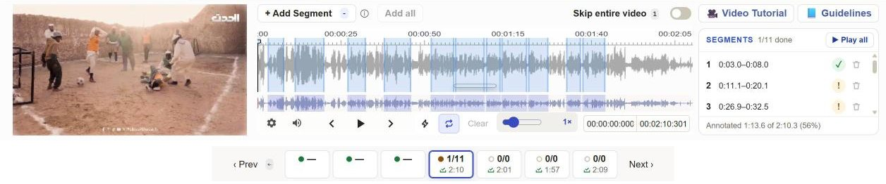

Install Cinnamon Boostتثبيت إضافة Cinnamon Boost
A Chrome extension that makes Label Studio faster and easier for audio and video transcription. Installing takes about 2 minutes and is done only once. Follow the steps in order. إضافة لمتصفح Chrome تجعل Label Studio أسرع وأسهل في تفريغ الصوت والفيديو. التثبيت يستغرق دقيقتين تقريبًا، ويتم مرة واحدة فقط. اتبع الخطوات بالترتيب.
Unzip the file into a folder you will keepفكّ ضغط الملف في مجلد ستحتفظ به
Right-click the file cinnamon-boost.zip and choose Extract All…. Windows suggests the Downloads folder: click Browse… and choose a place you will keep, for example Documents\cinnamon-boost, then click Extract.
انقر بزر الفأرة الأيمن على الملف cinnamon-boost.zip واختر Extract All… (استخراج الكل). يقترح Windows مجلد التنزيلات: اضغط Browse… (استعراض) واختر مكانًا ستحتفظ به، مثل Documents\cinnamon-boost، ثم اضغط Extract (استخراج).
Do not leave it in Downloads and do not delete the folder later: if the folder is deleted or moved, the extension stops working.لا تتركه في مجلد التنزيلات ولا تحذف المجلد لاحقًا: إذا حُذف المجلد أو نُقل، تتوقف الإضافة عن العمل.
Open the Extensions page in Chromeافتح صفحة الإضافات في Chrome
Open a new tab in Chrome, type chrome://extensions in the address bar and press Enter. (In Microsoft Edge type edge://extensions.)
افتح علامة تبويب جديدة في Chrome، واكتب في شريط العنوان chrome://extensions ثم اضغط Enter. (في متصفح Edge اكتب edge://extensions.)
Turn on “Developer mode”شغّل «وضع المطوّر» (Developer mode)
At the top right of the page, click the Developer mode switch so it turns blue.
في أعلى الصفحة يوجد مفتاح Developer mode (وضع المطوّر). اضغط عليه ليصبح لونه أزرق. يكون في أعلى اليمين، أو في أعلى اليسار إذا كانت لغة Chrome عربية.
Click “Load unpacked”اضغط زر «Load unpacked»
Three new buttons appear under the title. Click the first one, Load unpacked.
تظهر ثلاثة أزرار جديدة تحت العنوان. اضغط الزر الأول Load unpacked (تحميل إضافة غير مضغوطة).
Choose the folder from step 1اختر المجلد من الخطوة 1
A window opens. Go to the folder you extracted in step 1 (for example Documents), click the cinnamon-boost folder once, then click Select Folder.
تفتح نافذة لاختيار مجلد. اذهب إلى المكان الذي استخرجت فيه الملفات في الخطوة 1 (مثل Documents)، واضغط مرة واحدة على مجلد cinnamon-boost، ثم اضغط Select Folder (اختيار مجلد).
The right folder is the one that has manifest.json and this guide inside it.المجلد الصحيح هو الذي بداخله الملف manifest.json وهذا الدليل.
Downloads
Documents
Pictures
Check that it is installedتأكد من أن الإضافة ثُبّتت
A Cinnamon Boost card with a cinnamon roll icon appears, with its switch on (blue). That is all.
تظهر بطاقة Cinnamon Boost عليها أيقونة لفافة قرفة، ومفتاحها مُفعّل (أزرق). هذا كل شيء.
If you see “Manifest file is missing or unreadable”, you chose the wrong folder: click Load unpacked again and choose the folder that has manifest.json inside.إذا ظهرت رسالة «Manifest file is missing or unreadable» فقد اخترت مجلدًا خاطئًا: اضغط Load unpacked مرة أخرى واختر المجلد الذي بداخله manifest.json.
Pin the icon (optional)ثبّت الأيقونة في الشريط (اختياري)
Click the puzzle-piece icon at the top right of Chrome, then click the pin next to Cinnamon Boost. The cinnamon roll icon then stays in the toolbar, so you can open the settings with one click.
اضغط أيقونة قطعة الأحجية في أعلى Chrome، ثم اضغط الدبوس بجانب Cinnamon Boost. ستبقى أيقونة لفافة القرفة ظاهرة في الشريط، فتفتح الإعدادات بضغطة واحدة.
Open a task in Label Studioافتح مهمة في Label Studio
Open any task (or reload the page if Label Studio is already open). When the task has loaded, the video, the wave and the segment list are in one window, and the task tiles are at the bottom:
افتح أي مهمة (أو أعد تحميل الصفحة إن كان Label Studio مفتوحًا). عندما تُحمَّل المهمة يظهر الفيديو والموجة الصوتية وقائمة المقاطع في نافذة واحدة، وتظهر مربعات المهام في الأسفل:

A message about “developer mode extensions”رسالة عن «إضافات وضع المطوّر»
When Chrome starts, it may show a message about extensions in developer mode. This is normal for extensions installed this way. Close the message; do not choose to turn the extension off.
عند تشغيل Chrome قد تظهر رسالة عن الإضافات في وضع المطوّر. هذا طبيعي للإضافات المثبتة بهذه الطريقة. أغلق الرسالة، ولا تختر تعطيل الإضافة.
Settingsالإعدادات
- Click the cinnamon roll icon in the toolbar to open the settings.
- Under Mode, choose Full (recommended) to enable all features, Loading fix only for faster loading and smoother playback with the standard layout, or Off for the standard Label Studio experience.
- After a change, save your work and reload the Label Studio page.
- If a page looks wrong, choose Off and tell the person who sent you this file.
- اضغط أيقونة لفافة القرفة في الشريط لفتح الإعدادات.
- ضمن Mode (الوضع)، اختر Full (موصى به) لتشغيل كل الميزات، أو Loading fix only لتحميل أسرع وتشغيل أكثر سلاسة مع الواجهة المعتادة، أو Off لاستخدام Label Studio كالمعتاد.
- بعد أي تغيير، احفظ عملك ثم أعد تحميل صفحة Label Studio.
- إذا ظهر خلل في الصفحة، اختر Off وأخبر الشخص الذي أرسل لك هذا الملف.
Keyboard shortcutsاختصارات لوحة المفاتيح
| Space | Play / pauseتشغيل / إيقاف مؤقت |
| 9 / 0 | Jump back / forward 1 secondالرجوع / التقدّم ثانية واحدة |
| Alt+9 / Alt+0 | The same while typing in the transcription boxنفس الشيء أثناء الكتابة في مربع التفريغ |
| Tab / Shift+Tab | Next / previous segmentالمقطع التالي / السابق |
| Y / N | Code-switching: Yes / No (selected segment)التبديل اللغوي: نعم / لا (للمقطع المحدد) |
| Ctrl | Pressed alone: go to the transcription boxعند ضغطه وحده: الانتقال إلى مربع التفريغ |
| Enter | Save the transcription textحفظ نص التفريغ |
| → | Submit / Update, or go to the next taskإرسال / تحديث، أو الانتقال إلى المهمة التالية |
| ← | Previous taskالمهمة السابقة |
| Ctrl + mouse wheelعجلة الفأرة | Zoom the wave gentlyتكبير الموجة الصوتية بهدوء |
| Alt+L | Show / hide the task listإظهار / إخفاء قائمة المهام |
You can change the keys in the settings, under Keyboard.يمكنك تغيير المفاتيح من الإعدادات، في قسم Keyboard.
Updating to a new versionالتحديث إلى نسخة جديدة
When a new version is out, a blue Update button appears in the extension's bar in Label Studio, and the extension icon shows NEW. Then:
عند صدور نسخة جديدة يظهر زر أزرق Update في شريط الإضافة داخل Label Studio، وتظهر كلمة NEW على أيقونة الإضافة. عندها:
- Open your Cinnamon Boost folder (the same folder you originally loaded in Chrome) and double-click update.cmd. A black window downloads the new version and says “Updated to Cinnamon Boost …”. Press any key to close it.
- Click the cinnamon roll icon, then Reload extension.
- Refresh the Label Studio page. Your settings are kept.
- افتح مجلد Cinnamon Boost (المجلد نفسه الذي حمّلته في Chrome عند التثبيت) وانقر مرتين على update.cmd. تفتح نافذة سوداء تنزّل النسخة الجديدة وتكتب «Updated to Cinnamon Boost …». اضغط أي مفتاح لإغلاقها.
- اضغط أيقونة لفافة القرفة، ثم Reload extension.
- أعد تحميل صفحة Label Studio. تبقى إعداداتك كما هي.
If Windows shows “Windows protected your PC”, click More info, then Run anyway. If update.cmd cannot update, download cinnamon-boost.zip again from the releases page, extract it into the same folder (replace the files), then click the reload arrow ↻ on the extension in chrome://extensions.إذا ظهرت رسالة «Windows protected your PC» اضغط More info ثم Run anyway. إذا لم ينجح update.cmd، نزّل cinnamon-boost.zip مرة أخرى من صفحة الإصدارات، واستخرجه في نفس المجلد (مع استبدال الملفات)، ثم اضغط سهم إعادة التحميل ↻ على الإضافة في chrome://extensions.
Good to knowمعلومات مفيدة
- Videos you open, and the next tasks (downloaded in the background), are kept on your computer so they open instantly: up to 6 files, about 0.5–0.8 GB.
- Nothing is sent anywhere except to Label Studio itself.
- To uninstall: click Remove on the card in
chrome://extensions, then delete the folder.
- الفيديوهات التي تفتحها، والمهام التالية (التي تُنزَّل في الخلفية)، تُحفظ على جهازك لتفتح فورًا: حتى 6 ملفات، أي نحو 0.5 إلى 0.8 غيغابايت.
- لا تُرسَل أي بيانات إلى أي مكان غير Label Studio نفسه.
- لإزالة الإضافة: اضغط Remove على بطاقتها في
chrome://extensions، ثم احذف المجلد.